12 Logic Programming
Many problems, especially frequent in the field of Artificial Intelligence, and also found elsewhere, e.g., in operations research, are currently solvable only by resorting to some form of search and constraint propagation. Such problems can be specified very concisely, if the programming language abstracts away the details of search by providing don't know nondeterminism. Logic programming and Prolog is considered a suitable formalism for this class of problems. In this chapter we will talk about how to express logic programming and concurrent constraint programming in Oz. In logic programming each procedure can be interpreted as a relation expressed by a logical statement. We will also discuss the relation between Oz and Prolog, and how most Prolog programs have a straight forward translation to Oz programs. For more advanced constraint solving techniques, the reader may look to the companion tutorial on constraint programming in Oz.
Warning:Please note that the material in this chapter is still incomplete.
12.1 Constraint Stores
Oz threads share a store where variable bindings are stored in the form of equalities: 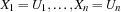 where  are variables and 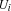 are either Oz entities or variables. The constraint store contains the Oz values corresponding to records, numbers, names or variables, and the names that uniquely idententifies the procedures, cells and the various types of chunks (classes, objects, functors, etc.). Conceptually the store is modeled as a conjunctive logical formula:
are variables and 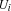 are either Oz entities or variables. The constraint store contains the Oz values corresponding to records, numbers, names or variables, and the names that uniquely idententifies the procedures, cells and the various types of chunks (classes, objects, functors, etc.). Conceptually the store is modeled as a conjunctive logical formula:  , where the are the variables and are Oz values or variables, and
, where the are the variables and are Oz values or variables, and  are the union of all variables occuring in and . The store is said to be a constraint store. An Oz computation store consists of a constraint store, a procedure store where procedures reside, and a cell store where cells and object states reside.
are the union of all variables occuring in and . The store is said to be a constraint store. An Oz computation store consists of a constraint store, a procedure store where procedures reside, and a cell store where cells and object states reside.
12.2 Computation Spaces
A computation space consists in general of a computation store and a set of executing threads. What we have seen so far is a single computation space. When dealing with logic programming a more elaborate structure will arise with multiple nested computation spaces. The general rules for the structure of computation spaces are as follows.
There is always a topmost computation space where threads may interact with the external world. A thread trying to add inconsistent constraints (bindings) to the store of the top space will raise a failure exception in the thread. The addition of the inconsistent constraints will be aborted and the constraint store remains always consistent.
A thread may create a local computation space either directly or indirectly as will be shown in this section. The new computation space will be a child space and the current one the parent space. In general a hierarchy of computation spaces may be created.
A thread belongs always to one computation space. Also, variables belong to only one computation space.
A thread in a child space sees and may access variables belonging to its space as well as to all ancestor spaces. The converse is false. A thread in a parent space cannot see the variables of a child space, unless the child space is merged with the parent. In such a case, the child space disappears, and all its content is added to the parent space. The space merge operation may occur due to an explicit operation, or indirectly due to a language construct as will be seen in this section.
A Thread in a child space my add constraints (bindings) on variables visible to it. This means that it may bind variables belonging to its space or to its ancestor spaces. The binding will only be visible in the current space and all its children spaces if any.
12.3 Constraint Entailment and Disentailment
A condition is entailed by the store  if , considered as a logical formula, is logically implied by the store , again considered as a logical formula. Intuitively entailment of means that adding to the store does not increase the information already there. Everything is already there.
if , considered as a logical formula, is logically implied by the store , again considered as a logical formula. Intuitively entailment of means that adding to the store does not increase the information already there. Everything is already there.
A condition is disentailed by the store if the negation of is logically implied by the store . A disentailed constraint is inconsistent with the information already in the store.
Since a constraint store is a logical formula, we can also talk of a constraint store being entailed, or disentailed by another constraint store. A space is entailed (disentailed) by another space  if the constraint store of is entailed (disentailed) by the constraint store if .
if the constraint store of is entailed (disentailed) by the constraint store if .
We call a space that is disentailed (normally by a parent space) a failed space .
12.3.1 Examples
Consider the store 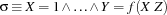 and the following conditions:
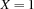 is entailed since adding this binding does not increase the information in the store.
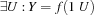 is also entailed. Adding this information does not increase our information. There is a 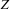 that satisfies the above condition. Notice that we do not know which value will assume. But whatever value assumed by , the condition would be still satisfied.
 is not entailed by the store, since adding this equality increases the information there, namely by making 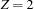.
is not entailed by the store, since adding this equality increases the information there, namely by making 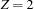.  or
or  are both disentailed since they contradict information already present. They will cause a failure exception to be raised: in the top space this is normally reported to the user in an error message, whereas a subordinated space is merely failed.
are both disentailed since they contradict information already present. They will cause a failure exception to be raised: in the top space this is normally reported to the user in an error message, whereas a subordinated space is merely failed.
12.4 Disjunctions
Now we are in a position to understand the nondeterminate constructs of Oz. Oz provides several disjunctive constructs for nondeterminate choice, also known as don't know choice statements.
12.4.1 or statement
In all the disjunctive statements we are going to use the notion of a clause and a guard. A clause consists of a guard G and a body S1, and has the following form:
G then S1
The guard G has the form:
X1...XninS0
where the variables Xi are existentially quantified with scope extending over both the guard and the body.
The first disjunctive statement has the following form:
orG1
thenS1G2
[]thenS2GN
...
[]thenSN
end
An or-statement has the following semantics. Assume a thread is executing the statement in space SP.
The thread is blocked.
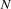 spaces are created 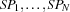 with new threads executing the guards
 .
. Execution of the father thread remains blocked until at most one of the child spaces is not failed.
If all children spaces are failed, the parent thread raises a failure condition in its space. This means that if the space of the parent thread is the top space, a failure exception is raised. Otherwise the space is local and it becomes a failed space.
Only one space remains that is not failed which corresponds to the clause 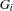
then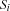. Assume also that has been reduced to the goal and the constraint
and the constraint  . In this case, the space is merged with the parent space. and the variables of the store are added to that of the parent store. executes in its own thread, and the original suspending thread resumes executing the statement . This rule of execution is called unit commit in Oz because execution commits to one alternative disjunct (the only one that is left).
. In this case, the space is merged with the parent space. and the variables of the store are added to that of the parent store. executes in its own thread, and the original suspending thread resumes executing the statement . This rule of execution is called unit commit in Oz because execution commits to one alternative disjunct (the only one that is left).
12.4.2 Shorthand Notation
orGi
...
[]
...
end
Stands for
orGi
...
[]then skip
...
end
Observe that the or statement does not introduce any don't know nondeterminism. A thread executing such a statement waits until things works out in a determinate course of action.
12.4.3 Prolog Comparison
The or statement just described does not have a corresponding construct in Prolog. The Prolog disjunct P ; Q always creates a choice point that is subject to backtracking.
12.5 Determinacy Driven Execution
The or-statement of Oz allows a pure logical form of programming style where computations are synchronized by determinacy conditions. Consider the following program.
proc {Ints N Xs}
or N = 0 Xs = nil
[] Xr in
N > 0 = true Xs = N|Xr
{Ints N-1 Xr}
end
end
local
proc {Sum3 Xs N R}
or Xs = nil R = N
[] X|Xr = Xs in
{Sum3 Xr X+N R}
end
end
in proc {Sum Xs R} {Sum3 Xs 0 R} end
end
local N S R in
thread {Ints N S} end
thread {Sum S {Browse}} end
N = 1000
end
The thread executing Ints will suspend until N is known, because it cannot decide on which disjunct to take. Similarly, Sum3 will wait until the list S is known. S will be defined incrementally and that will lead to the suspension and resumption of Sum3. Things will start to take off when the main thread binds N to 1000. This shows clearly that determinacy driven execution gives the synchronization information need to mimic producer/consumer behavior.
12.6 Conditionals
12.6.1 Logical Conditional
A logical conditional is a statement having the following form.
condX1...XNinS0thenS1elseS2end
where Xi are newly introduced variables, and Si are statements. X1 ... XN in S0 then S1 is the clause of the conditional, and S2 is the alternative.
A cond-statement has the following semantics. Assume a thread is executing the statement in space SP.
The thread is blocked.
A space 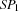 is created, with a single thread executing the guard
condX1...XNinS0.Execution of the father thread remains blocked until is either entailed or disentailed. Notice that these conditions may never occur, e. g. when some thread is suspending or running forever in .
If is disentailed, the father thread continues with S2.
If is entailed, assume it has been reduced to the store
and the set of local variables 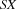 In this case, the space is merged with the parent space. and added to the parent store, and the father thread continues with the execution of S1.
12.6.2 Prolog Comparison
The cond statement just described corresponds roughly to Prolog's conditional P -> Q ; R . Oz is a bit more careful about the scope of variables, so local variables Xi have to be introduced explicitly. cond X in P then Q else R end always has the logical semantics  , given that we stick to the logical part of Oz. This is not always true in Prolog.
, given that we stick to the logical part of Oz. This is not always true in Prolog.
12.6.3 Parallel Conditional
A parallel conditional is of the form
condG1thenS1G2
[]thenS2SN
...
elseend
A parallel conditional is executed by evaluating all conditions G1 ... G(N-1) in an arbitrary order, possibly concurrently, each in its own space. If one of the spaces, say Gi, is entailed, its corresponding statement Si is chosen by the father thread. If all spaces are failed, the else statement SN is chosen, otherwise the executing thread suspends.
Parallel conditionals are useful mostly in concurrent programming, e.g. for programming time-out on certain events. This construct is the basic construct in concurrent logic programming languages (also known as committed-choice languages).
As a typical example from concurrent logic programming let us define the indeterministic binary merge, where the arrival timing of elements on the two streams Xs and Ys determines the order of elements on the resulting stream Zs.
proc {Merge Xs Ys Zs}
cond
Xs = nil then Zs = Ys
[] Ys = nil then Zs = Xr
[] X Xr in Xs = X|Xr then Zr in
Zs = X|Zr {Merge Xr Ys Zr}
[] Y Yr in Ys = Y|Yr then Zr in
Zs = Y|Zr {Merge Xs Yr Zr}
end
end In general binary-stream merge is inefficient, specially when multiple of these are used to connect multiple threads to a simple server thread. An efficient way to implement a constant-time multi-merge operator is defined below by using cells and streams instread. The procedure {MMerge STs L} has two arguments STs may be either nil, a list of streams to merged, or of the form merge(ST1 ST2) where each STi is again of the same form as STs.
proc {MMerge STs L}
C = {NewCell L}
proc {MM STs S E}
case STs
of ST|STr then M in
thread
{ForAll ST proc{$ X} ST1 in {Exchange C X|ST1 ST1} end}
M=S
end
{MM STr M E}
[] nil then skip
[] merge(STs1 STs2) then M in
thread {MM STs1 S M} end
{MM STs2 M E}
end
end
E
in
thread {MM STs unit E} end
thread if E==unit then L = nil end end
end A binary-merge {Merge X Y Z} is simply {MMerge [X Y] Z}.
12.7 Nondeterministic Programs and Search
Oz allows much of the nondeterministic and search-oriented programming as Prolog. This type of programming comes in a little bit different flavour than Prolog. While Prolog comes ready with a default search strategy based on backtracking, Oz allows programmers to devise their suitable search strategies in a way that is separate and orthogonal from the nondeterministic specification of a problem.
To be able to do this Oz has a specific linguistic constructs that create choice point without specifying how they will be explored. A completely separate program can then specify the search strategy.
12.7.1 dis Construct
The following program uses the dis construct of Oz to create a choice point when necessary.
proc {Append Xs Ys Zs}
dis
Xs = nil Ys = Zs then skip
[] X Xr Zr in
Xs = X|Xr Zs = X|Zr then
{Append Xr Ys Zr}
end
endIt corresponds roughly to the append/3 program of Prolog:
append([], Ys, Ys).
append([X|Xr], Ys, [X|Zr]) :- append(Xr, Yr, Zr).In fact the same kind of abbreviations that hold for or hold also for dis. That is the above program have the following abbreviated form.
proc {Append Xs Ys Zs}
dis
Xs = nil Ys = Zs
[] X Xr Zr in
Xs = X|Xr Zs = X|Zr then
{Append Xr Ys Zr}
end
endAssume the following procedure call:
local X in
{Append [1 2 3] [a b c] X}
{Browse X}
endThis will behave exactly as the or construct, i.e. it will deterministically bind X to [1 2 3 a b c]. If we on the other hand try:
local X Y in
{Append X Y [1 2 3 a b c]}
{Browse X#Y}
end the bahavior will look the same as with the or construct; the thread executing this sequence of calls will suspend while executing {Append X Y [1 2 3 a b c]}. There is however a difference. The call of Append will create a choice-point with two alternatives:
X = nil Y = [1 2 3 a b c] then skipXr Xr in
X = 1|Xr Zr = [2 3 a b c] then
{Append Xr Y Zr}
12.7.2 Define Clause Grammer
Sentence(P) --> NounPhrase(X P1 P) VerbPhrase(X P1)
NounPhrase(X P1 P) --> Determiner(X P2 P1 P) Noun(X P3) RelClause(X P3 P2)
NounPhrase(X P P) --> Name(X)
VerbPhrase(X P) --> TransVerb(X Y P1) NounPhrase(Y P1 P) | InstransVerb(X P)
RelClause(X P1 and(P1 P2)) --> [that] VerbPhrase(X P2)
RelClause(_ P P) --> []
Determiner(X P1 P2 all(X imp(P1 P2))) --> [every]
Determiner(X P1 P2 exits(X and(P1 P2))) --> [a]
Noun(X man(X)) --> [man]
Noun(X woman(X)) --> [woman]
name(john) --> [john]
name(jan) --> [jan]
TransVerb(X Y loves(X Y)) --> [loves]
IntransVerb(X lives(X)) --> [lives]
proc {Sentence P S0#S}
X P1 S1 in
{NounPhrase X P1 P S0#S1}
{VerbPhrase X P1 S1#S}
end
proc {NounPhrase X P1 P S0#S}
choice
P2 P3 S1 S2 in
{Determiner X P2 P1 P S0#S1}
{Noun X P3 S1#S2}
{RelClause X P3 P2 S2#S}
[] {Name X S0#S}
P1 = P
end
end
proc {VerbPhrase X P S0#S}
choice
Y P1 S1 in
{TransVerb X Y P1 S0#S1}
{NounPhrase Y P1 P S1#S}
[] {IntransVerb X P S0#S}
end
end
proc {TransVerb X Y Z S0#S}
S0 = loves|S
Z = loves(X Y)
end
proc {IntransVerb X Y S0#S}
S0 = lives|S
Y = lives(X)
end
proc {Name X S0#S}
S0 = X|S
choice
X = john
[]
X = jan
end
end
proc {Noun X Y S0#S}
choice
S0 = man|S
Y = man(X)
[] S0 = woman|S
Y = woman(X)
end
end
proc {Determiner X P1 P2 P S0#S}
choice
S0 = every|S
P = all(X imp(P1 P2))
[] S0 = a|S
P = exists(X and(P1 P2))
end
end
proc {RelClause X P1 P S0#S}
P2 in
choice
S1 in
S0 = that|S1
P = and(P1 P2)
{VerbPhrase X P2 S1#S}
[] S0 = S
P = P1
end
end
declare
proc {Main P}
{Sentence P [every man that lives loves a woman]#nil}
end12.7.3 Some Search Procedures
12.7.4 Dis Construct
declare Edge
proc {Connected X Y}
dis
{Edge X Y}
[] Z in {Edge X Z} {Connected Z Y}
end
end
proc {Edge X Y}
dis
X = 1 Y = 2
[] X = 2 Y = 1
[] X = 2 Y = 3
[] X = 3 Y = 4
[] X = 2 Y = 5
[] X = 5 Y = 6
[] X = 4 Y = 6
[] X = 6 Y = 7
[] X = 6 Y = 8
[] X = 1 Y = 5
[] X = 5 Y = 1
end
end
{ExploreOne
proc {$ L}
X Y in
X#Y = L {Connected X Y}
end
}
{Browse
{SearchAll
proc {$ L}
X Y in
X#Y = L {Connected X Y}
end
}}12.7.5 Negation
proc {NotP P}
{SearchOne proc {$ L} {P} L=unit end $} = nil
end
proc {ConnectedEnh X Y Visited}
dis
{Edge X Y}
[] Z in
{Edge X Z}
{NotP proc{$} {Member Z Visited} end}
{ConnectedEnh Z Y Z|Visited}
end
end
12.7.6 Dynamic Predicates
proc {DisMember X Ys}
dis Ys = X|_ [] Yr in Ys = _|Yr {DisMember X Yr} end
end
class DataBase from BaseObject
attr d
meth init
d := {NewDictionary}
end
meth dic($) @d end
meth tell(I)
case {IsFree I.1} then
raise database(nonground(I)) end
else
Is = {Dictionary.condGet @d I.1 nil} in
{Dictionary.put @d I.1 {Append Is [I]}}
end
end
meth ask(I)
case {IsFree I} orelse {IsFree I.1} then
{DisMember I {Flatten {Dictionary.items @d}}}
else
{DisMember I {Dictionary.condGet @d I.1 nil}}
end
end
meth entries($)
{Dictionary.entries @d}
end
end
declare
proc {Dynamic ?Pred}
Pred = {New DataBase init}
end
proc {Assert P I}
{P tell(I)}
end
proc {Query P I}
{P ask(I)}
end
EdgeP = {Dynamic}
{ForAll
[edge(1 2)
edge(2 1) % Cycle
edge(2 3)
edge(3 4)
edge(2 5)
edge(5 6)
edge(4 6)
edge(6 7)
edge(6 8)
edge(1 5)
edge(5 1) % Cycle
]
proc {$ I} {Assert EdgeP I} end
}